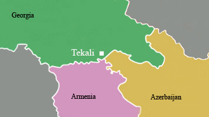
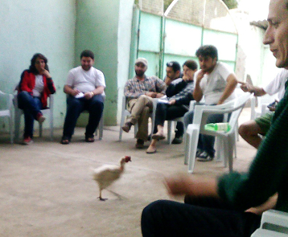

THE FIRST TEKALI FESTIVAL
From 30 August to 3 September 2012 film-makers, writers, visual artists, musicians, journalists and conflictologists from South-Caucasian and other countries were seeing and discussing Armenian, Azerbaijani and Georgian films, holding meaty debates, trainings and workshops and presenting their projects.
Organizers of the festival: Teqali Association (Georgia), Center of Regional Partnership and Community Development (Azerbaijan), Caucasus Center of Peace-Making Initiatives (Armenia) by support of German Marshall Fund (USA)
Organizers of the festival: Teqali Association (Georgia), Center of Regional Partnership and Community Development (Azerbaijan), Caucasus Center of Peace-Making Initiatives (Armenia) by support of German Marshall Fund (USA)

MANIFESTO
We participants of the First Tekali Festival, express our deepest gratitude to Tekali dwellers for their care and hospitality and declare the following:
- A South-Caucasian festival representing the variety of all genres and kinds of modern arts will be arranged annually in Tekali;
- We will develop the infrastructure of our festival in order to make the parcel of land that a Tekali dweller presented us our ground for meetings and join creative work;
- The Tekali festival will be arranged as an open, inclusive space;
- We will do everything possible and impossible to have a market and fair place opened in Tekali, to make it a crossroad for meetings and communication to all inhabitants of the South Caucasus.
- A South-Caucasian festival representing the variety of all genres and kinds of modern arts will be arranged annually in Tekali;
- We will develop the infrastructure of our festival in order to make the parcel of land that a Tekali dweller presented us our ground for meetings and join creative work;
- The Tekali festival will be arranged as an open, inclusive space;
- We will do everything possible and impossible to have a market and fair place opened in Tekali, to make it a crossroad for meetings and communication to all inhabitants of the South Caucasus.
